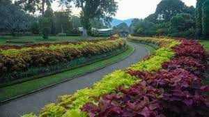

Heritages are important for many reasons,both culturally and historically.They can contribute to economic development by attracting tourists and promoting local economies through cultural tourism. Kandy has a wealth of cultural and historical heritages,making it one of the oldest cities in Sri Lanka.
